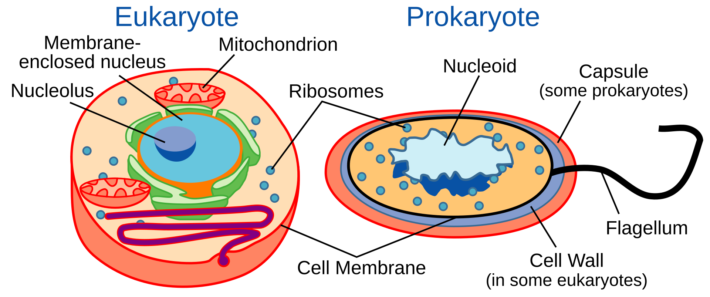

Introduction to Cell
เซลล์ (อังกฤษ: cell จากภาษาละติน cella แปลว่าห้องเล็ก ๆ) เป็นโครงสร้างและหน่วยการทำงานพื้นฐานที่สุดของสิ่งมีชีวิตทุกชนิดที่ทราบกัน เซลล์เป็นหน่วยย่อยที่สุดที่จะเรียกว่า "ชีวิต" ได้ ในบางครั้งอาจเรียกว่า"หน่วยโครงสร้างของชีวิต" (the building block of life) การศึกษาเกี่ยวกับเซลล์เรียกว่าชีววิทยาของเซลล์ (cell biology), ชีววิทยาระดับเซลล์, หรือเซลล์วิทยา (cytology)

เซลล์ของรากหัวหอม (Allium cepa) ที่อยู่ในระยะต่าง ๆ ของการแบ่งเซลล์ (ภาพโดย E. B. Wilson, 1900)
เซลล์ประกอบจากไซโทพลาซึมที่มีเยื่อหุ้มล้อมรอบ ภายในไซโทพลาซึมบรรจุสารชีวโมเลกุลเช่น โปรตีนและกรดนิวคลิอิก เซลล์ของพืชและสัตว์ส่วนใหญ่สามารถมองเห็นได้ด้วยกล้องจุลทรรศน์แบบใช้แสงที่มีมิติ (dimension) ระหว่าง 1 ถึง 100 ไมโครเมตร กล้องจุลทรรศน์อิเล็กตรอนให้ความคมชัดและรายละเอียดที่มากกว่า สิ่งมีชีวิตถูกจำแนกออกเป็นสิ่งมีชีวิตเซลล์เดียว (unicellular; เช่นแบคทีเรีย) และหลายเซลล์ (multicellular; เช่น พืชและสัตว์) โดยสิ่งมีชีวิตเซลล์เดียวส่วนมากจัดเป็นจุลชีพ (microorganism)
จำนวนของเซลล์ในพืชและสัตว์แตกต่างกันออกไปตามแต่ละสปีชีส์ มีการประมาณว่าร่างกายของมนุษย์มีจำนวนเซลล์ที่ 40 ล้านล้าน เซลล์ สำหรับเซลล์ในสมองอยู่ที่ประมาณ 8 หมื่นล้านเซลล์

เซลล์ยูแคริโอต (ซ้าย) และเซลล์โพรแคริโอต (ขวา)
รอเบิร์ต ฮุก (Robert Hooke) ค้นพบเซลล์ใน ค.ศ. 1665 โดยตั้งชื่อว่า cell เนื่องจากเขาเปรียบเซลล์ของไม้ก๊อกที่เห็นว่ามีลักษณะคล้ายคลึงกับห้องที่นักบวชในศาสนาคริสต์ใช้อาศัยภายในอาราม ใน ค.ศ. 1839 มัตทิอัส ยาคอบ ชไลเดน (Matthias Jakob Schleiden) และทีโอดอร์ ชวานน์ (Theodor Schwann) พัฒนาทฤษฎีเซลล์ที่กล่าวว่า สิ่งมีชีวิตทุกชนิดล้วนประกอบขึ้นจากหนึ่งเซลล์หรือมากกว่าหนึ่ง เซลล์เป็นโครงสร้างและหน่วยการทำงานที่เป็นขั้นมูลฐานของสิ่งมีชีวิตทุกชนิด และเซลล์ทั้งหมดกำเนิดมาจากเซลล์ที่มีอยู่ก่อน (preexisting cell) เซลล์ปรากฏขึ้นบนโลกเมื่อประมาณ 3.5 พันล้านปีก่อน